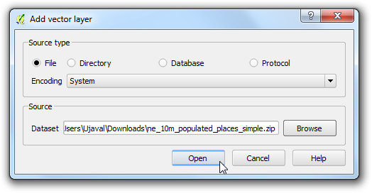
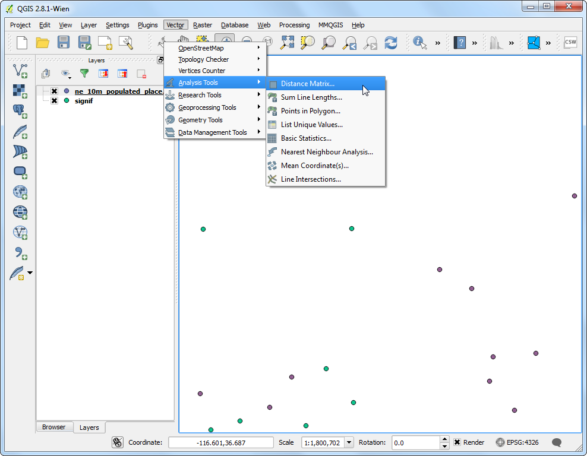
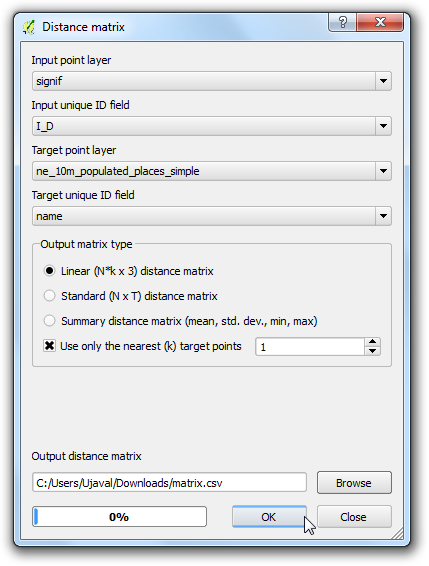
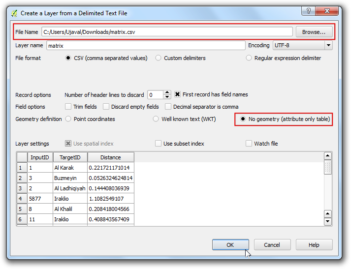
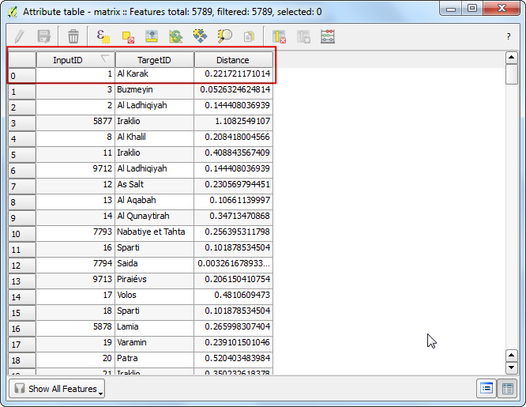
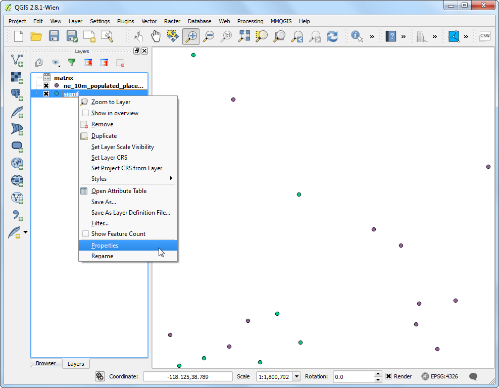

Analisa Tetangga Terdekat
[ Download PDF
A4
Letter ]
Gis sangat berguna dalam menganalisa relasi spaisal antara fitur. Satu dari analisis ini adalah menemukan fitur mana yang terdekat dengan fitur yang diberikan. QGIS memiliki tool Distance Matrix yang dapat membantu untuk analisis seperti ini. Dalam tutorial ini , kita akan memiliki 2 dataset dan mencari tahu poin-poin mana saja dari satu layer yang paling dekat dengan poin dari layer kedua.
Tinjauan Tugas
Diberikan lokasi dari semua gempabumi yang signifikan yang diketahui, cari tahu tempat berpopulasi terdekat untuk setiap populasi di mana gempabumi terjadi.
Skill lain yang akan anda pelajari
Bagaimana melakukan join tabel. (Lihat docs/penggabungan_tabel untuk instruksi detail)
Gunakan xxx untuk menunjukkan sebuah subset fitur-fitu dari sebuah layer.
Gunakan plugin MMQGIS untuk membuat garis pusat untuk memvisualisasikan tetangga terdekat.
Prosedur
Buka dan jelajahi file signif.txt

Karena ini adalah sebuah tab-delimited file , pilih Tab sebagai File format . X field dan Y field akan dikumpulkan secara otomatis. Klik OK.
Catatan
Anda mungkin melihat sejumlah error saat QGIS mencoba untuk mengimpor file. Ini adalah error yang valid dan sejumlah baris dari file tidak akan terimpor. Anda dapat mengacuhkan error untuk tujuan tutorial ini.

Dengan dataset gempabumi dalam koordinat lintang/bujur, ini akan diimpor dengan CRS awal EPSG: 4326 . Verifikasi dengan melihat sudut bawah-kanan. Mari buka layer tempat berpopulasi. Akses .

Jelajahi file ne_10m_populated_places_simple.zip dan klik Open.

Zoom sekitaran dan eksplor kedua dataset. Tiap poin ungu merepresentasikan lokasi dari gempabumi signifikan dan setiap poin bitu merepresentasikan lokasi tempat berpopulasi. Kita memerlukan cara untuk mencari tahu titik terdekat dari layer tempat berpopulasi untuk sertiap poin pada layer gempabumi.

Akses .

Disini pilih layer gempabumi signif sebagai layer poin input dan tempat berpopulasi ne_10m_populated_places_simple sebagai layer target. Anda juga perlu untuk memilih sebuah field unik dari setiap layer ini yang dimana bagaimana hasil anda akan diperlihatkan. Pada analisis ini, kita hanya mencari 1 poin terdekat, jadi beri tanda cek pada Use only the nearest(k) target points dan masukkan 1 . Beri nama file output ``matrix.csv` , dan klik OK. Ketika proses selesai, klik Close.
Catatan
Sebuah hal berguna untuk diperhatikan adalah anda da[at melakukan analisis hanya dengan 1 layer. Pilih layer yang sama untuk input dan target. Hasilnya akan menjadi sebuah tertangga terdakat dari layer yang sama bukan dari sebuah layer berbeda seperti yang kita gunakan di sini.

Ketika proses selesai, klik tombol Close pada dialog Distance Matrix . Anda dapat memperlihatkan file Distance Matrix di Notepad atau teks editor lain. QGIS dapat mengimpor file CSV juga, jadi kita akan menambahkannya ke QGIS dan melihatnya di sana. Akses .

Jelajahi file yang baru terbuat matrix.csv . Karena file ini hanya berupa kolom teks, pilih No geometry (attribute only table) sebagai Geometry definition . Klik OK.

Anda akan melihat file CSV terbuka sebagai sebuah tabel. Klik kanan pada layer tabel dan pilih Open Attribute Table.

Sekarang anda akan mampu untuk melihat isi dari hasil kita. Field InputID berisi field nama dari layer gempabumi. Field TargetID berisi nama fitur dari tempat berpopulasi yang paling dekat dengan titik gempabumi. Field Distance adalah jarak antara 2 poin.
Catatan
Ingat bahwa kalkulasi distance akan dilaksanakan menggunakan CRS layer. Disini jarak berupa unit decimal degrees karena koordinat layer sumber kita dalam derajat. Jika anda ingin jarak dalam meterm reproyeksi layer sebelum menjalankan tool.

Ini sangat dekat pada hasil yang kita cari. Untuk sejumlah user, tabel ini cukup. Akan tetapi, kita juga dapat mengintegrasikan hasil ini dalam layer gempabumi original kita dengan menggunakan sebuah Table Join . Klik kanan layer gempabumi, dan pilih Properties.

Akses tab Joins dan klik tombol +

Kita dapat menggabungkan data dari hasil analisis kita ke layer. Kita harus memilih sebuah field dari setiap layer yang memiliki nilai sama. Pilih matrix sebagai Join layer` dan InputID sebagai Join field . Target field untuk I_D . Biarkan opsi yang lain pada nilai awal dan klik OK.
Anda akan melihat join muncul pada tab guilabel:Joins . Klik OK.

Sekarang buka tabel attribut dari layer signif dengan mengklik-kanan dan memilih Open Attribute Table.

Anda akan melihat bahwa untuk setiap fitur gempabumi, sekarang kita memiliki sebuah attribut yakni tetangga terdekat(tempat berpopulasi terdekat) dan jarak ke tetangga terdekat.

Sekarang kita akan mengekslpor sebuah cara untuk memvisualisasikan hasil ini. Pertama, kita perlu untuk membuat join tabel permanen dengan menyimpannya ke layer baru. Klik kanam layer signif dan pilih Save As....

Klik tombol Browse disebelah label Save as dan beri nama layer output dengan earthquake_with_places.shp . Pastikan beri tanda cek pada Add saved file to map dan klik OK.

Ketika layer sudah terbuka, anda dapat menonaktifkan visibilitas layer signif . Karena dataset kita cukup besar, kita dapa menjalankan analisis visualisasi kita pada sebuah subset dari data. QGIS memiliki kegunaan yang rapih dimana anda dapat membuka sebuah subset dari sebuah layer tanpa harus mengekspornya ke sebuah layer baru. Klik kanan layer earthquake_with_places dan pilih Properties.

Pada tab General , scroll ke bawah sampai bagian Feature subset . Klik Query Builder.

Untuk tutorial ini, kita akan memvisualisasikan gempabumi dan tempat berpopulasi terdekat mereka yakni Mexico. Masukkan ekspresi berikut pada dialog Query Builder.

Anda dapat melihat bahwa hanya poin-poin yang berada di Mexico yang visibel atau terlihat di Kanvas. Mari lakukan hal yang sama untuk layer tempat berpopulasi. Klik-kanan layer ne_10m_populated_places_simple dan pilih Properties.

Buka dialog Query Builder dari tab General . Masukkan ekspresi berikut.

Sekarang kita siap untuk membuat visualisasi kita. Kita ingin menggunakan sebuah plugin bernama MMQGIS .Temukan dan install plugin. Lihat docs/using_plugins untuk detail lebih bagaimana berkerja dengan plugin. Ketika anda memiliki plugin terinstall, akses .

Pilih ne_10m_populated_places_simple sebagai Hub Point Layer dan name as the Hub ID Attribute . Hal yang sama, pilih earthquake_with_places sebagai Spoke Point Layer dan matrix_Tar sebagai Spoke Hub ID Attribute . Algoritma garis pusat akan berjalan melalui setiap poin gempabumi dan membuat sebuah garis akan join ke situ untuk tempat berpopulasi yang bersesuaian dengan attribut yang kita tentukan. Klik Browse dan beri nama Output Shapefile sebagai earthquake_hub_lines.shp . Klik OK untuk memulai proses.

Pemrosesan mungkin membutuhkan beberapa menit. Anda dapat melihat progress pada sudut bawah kiri Jendela QGIS.

Ketika proses selesai, anda akan melihat layer earthquake_hub_lines terbuka di QGIS. Anda dapat melihat bahwa tiap titik gempabumi sekarang memiliki sebuah garis yang menghubungkannya dengan tempat berpopulasi terdekat.